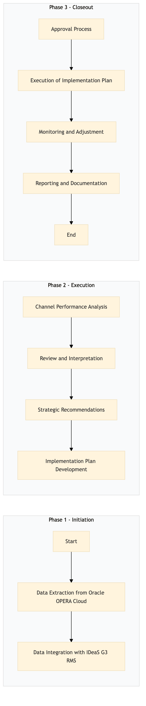

| Role | Steps |
|---|---|
| Revenue Manager | 1.1 1.2 2.1 2.2 3.1 3.2 3.4 3.5 3.6 |
| Property Manager | 3.3 |
| Step | Name | Role | System | Input | Output | KPI | Dec? | Exc? | Pain Point / Risk |
|---|---|---|---|---|---|---|---|---|---|
| 1.1 | Data Extraction from Oracle OPERA Cloud | Revenue Manager | Oracle OPERA Cloud | Reservation data | Extracted reservation data report | Less than 30 minutes for extraction | N | Y | Data extraction errors due to system updates |
| 1.2 | Data Integration with IDeaS G3 RMS | Revenue Manager | IDeaS G3 RMS | Extracted reservation data report | Integrated data in IDeaS G3 RMS | Less than 1 hour for integration | N | Y | Integration issues with new system versions |
| 2.1 | Channel Performance Analysis | Revenue Manager | IDeaS G3 RMS | Integrated data in IDeaS G3 RMS | Channel performance analysis report | Less than 2 hours for analysis | Y | N | Complexity of analyzing multiple channels |
| 2.2 | Review and Interpretation | Revenue Manager | IDeaS G3 RMS | Channel performance analysis report | Interpreted insights document | Less than 1 hour for review | Y | N | Understanding complex data trends |
| 3.1 | Strategic Recommendations | Revenue Manager | IDeaS G3 RMS | Interpreted insights document | Strategic recommendations report | Less than 2 hours for recommendations | Y | N | Balancing different revenue sources |
| 3.2 | Implementation Plan Development | Revenue Manager | IDeaS G3 RMS | Strategic recommendations report | Implementation plan document | Less than 1 hour for planning | Y | N | Resource allocation and prioritization |
| 3.3 | Approval Process | Property Manager | None | Implementation plan document | Approved implementation plan | Less than 1 day for approval | Y | N | Approval delays due to conflicting priorities |
| 3.4 | Execution of Implementation Plan | Revenue Manager | Oracle OPERA Cloud, SynXis CRS | Approved implementation plan | Executed changes in systems | Less than 2 days for execution | Y | N | System downtime during updates |
| 3.5 | Monitoring and Adjustment | Revenue Manager | Oracle OPERA Cloud, IDeaS G3 RMS | Executed changes in systems | Continuous monitoring and adjustment report | Daily monitoring with adjustments as needed | Y | N | Real-time data analysis for quick adjustments |
| 3.6 | Reporting and Documentation | Revenue Manager | Oracle OPERA Cloud, IDeaS G3 RMS | Continuous monitoring and adjustment report | Final channel performance analysis document | Less than 1 week for reporting | N | Y | Documentation errors due to complex data |
This process involves analyzing channel performance to optimize revenue management strategies at a full-service Marriott hotel using Oracle OPERA Cloud PMS and other key systems.